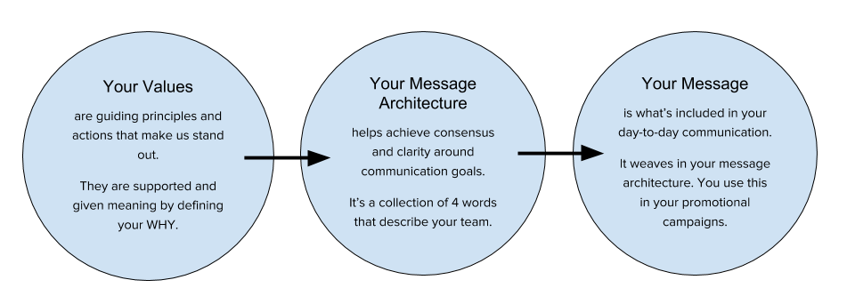

Branding
To develop effective branding for your PTS program, we need to make sure it supports who you are as an organization and team. We’ll start with defining your values, then your message architecture, and finally the messaging you’ll use day-to-day to promote your PTS tool.
Your Values: Using the WHY, HOW, WHAT Framework
“WHATs are products, services and job functions we perform. HOWs are values, guiding principles and actions that make us stand out. The WHY defines what the organization stands for—it is the collective purpose, cause or belief ... When we align emotionally with our customers, our connection is more meaningful than any affiliation based on features and benefits.” - Taken from Find Your Why by Simon Sinek
For example:
Our WHY:
At the UCD Energy Conservation Office we believe we can reach innovative solutions when we work together. This drives our projects to educate and engage the campus community in using our collective resources efficiently.
Our HOW:
| Education | We aim to educate our users in delightful and engaging ways. |
|---|---|
| Community | We aim to create a customer-focused community for our users to learn and engage with energy use on campus. |
| Stewardship | We will use and help others use resources in a thoughtful, optimal manner. |
Our WHAT:
TherMOOstat is our project to engage the campus in thermal comfort and give them opportunities to be a part of energy conservation on campus.
Your turn:
Your WHY is your office’s collective purpose. Don’t spend too much time on this, but it is helpful if you can articulate a shared vision. It is also OK if you have several ideas.
Your HOW are your core values and/or guiding principles. This is important to define for your PTS program. You can use core values given to you by your office or University.
Your WHAT is Crowdsourcing Campus Comfort. We’ve got you covered on this one.
Your Message Architecture: How to communicate your core values
A message architecture helps to achieve consensus and clarity around communication goals.
“Bold leadership requires vision and direction: that's your message architecture... The message architecture your team establishes at the beginning of the project will help maintain consistency of vision long after the project launches."
-Taken from Content Strategy at Work by Margot Bloomstein
In the table below, circle four of the words. Four are highlighted to show you which four we use at UC Davis, but you are free to choose what’s important to you. Descriptions are provided but you can interpret the words as makes sense to you and your team. This is your message architecture.
FIXME: INSERT GRAPHIC
Your Messages
In the table below you can see how you can use your core values when drafting your messaging:
FIXME: INSERT GRAPHIC